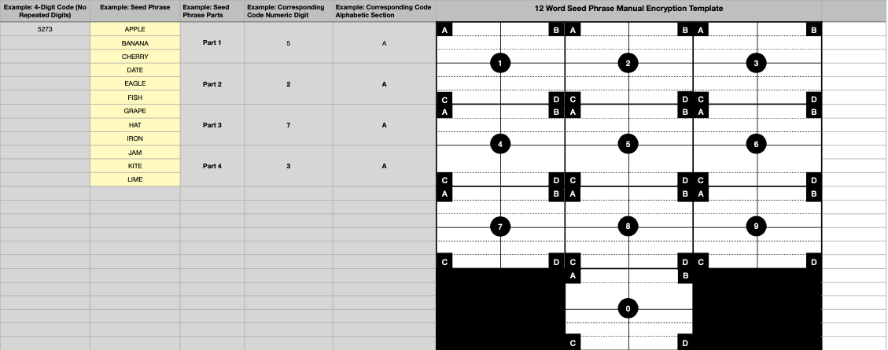
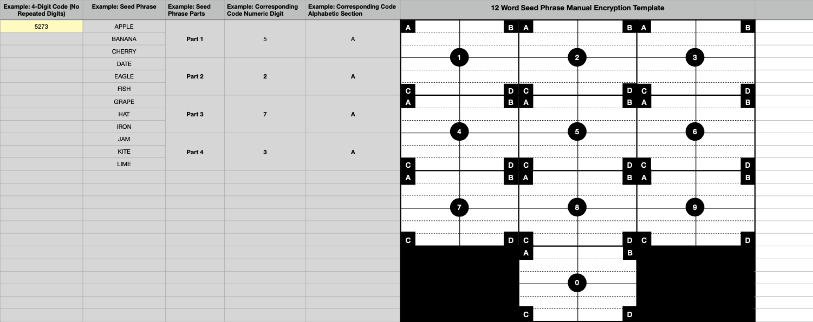
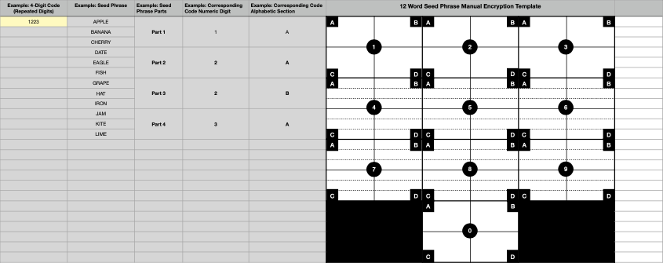
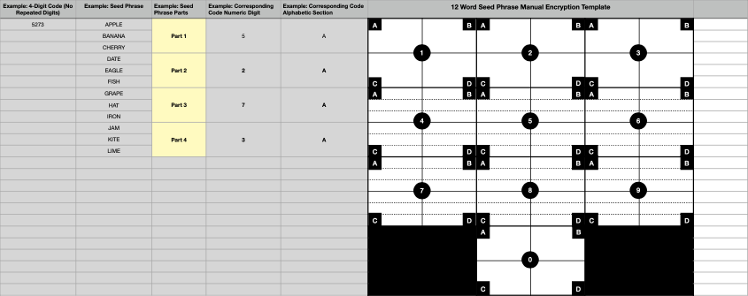

Templates and User Guide for Manually Encrypting Cryptocurrency Seed Phrases Using an Alpha-Numeric Keypad and a 4-Digit Code
1. Background In the field of cryptocurrency, securely storing private key seed phrases (here out referred to as “seed phrases”, “seed phrase”, “phrases”, or “phrase”) is critical to protecting one’s digital assets. One way in which phrases can be securely stored is by manually writing (or typing) the phrase on paper (or electronic document). This specific method for storing phrases is vulnerable to unauthorized access. Unauthorized accessors can use the phrase, if discovered, to steal cryptocurrency funds. The following manual encryption method attempts to address this vulnerability using an alpha-numeric keypad and a 4-digit code to obscure the seed phrase among decoy words.
2. Purpose To securely store cryptocurrency seed phrases by manually encrypting them using an alpha- numeric keypad and a 4-digit code.
3. Important Security Notices This is not a private keys/ seed phrase generator. This method does not protect against brute force computer decryption. The following templates offer just 10,000 possible combinations, which equates to about 2^13. For a method to be secure against brute force attacks, a far greater number of combinations is required— typically 2^128 or more. Please be mindful of this when using this method.
4. What You Need • 12-word cryptocurrency private key seed phrase (generated from your cryptocurrency wallet of choice) • The template(s) for the alpha-numeric keypad provided • It is recommended that users reference the BIP-39 word list (https://github.com/bitcoin/bips/ blob/master/bip-0039/english.txt) and a word list randomizer (https://www.random.org/lists/) to generate decoy words
5. Process Overview 1. Select a 4-digit code (digits can be repeated up to 4 times) 2. Divide your seed phrase into 4 equal parts 3. Map each part of the seed phrase to a specific section on the numeric keypad to your 4- digit code 4. Fill sections of the keypad that are not mapped to your seed phrase with decoy words
-
6. User Guide (Applies to 12, 16, 24 word seed phrases)
Prerequisite:
User already has a 12-word cryptocurrency private key seed phrase that was generated using a cryptocurrency private key seed phrase generator (e.g., a cryptocurrency wallet like Coinbase Wallet)
• Example Seed Phrase: apple banana cherry date eagle fish grape hat iron jam kite lime

- Step 1: Determine Your 4-Digit Code User chooses their numeric 4-digit code. Digits can be repeated up to 4 times by using the 4 alphabetic subsections within a given digit. The code will be used to determine the organization of your seed phrase. • Example Code: 5273  • Example Code (w/ Repeated Digits): 1223 
- Step 2: Divide Your Seed Phrase Divide your 12-word seed phrase into 4 sequential parts, each containing 3 words in the original order of the seed phrase. • Example Seed Phrase Parts: - Section 1: apple banana cherry - Section 2: date eagle fish - Section 3: grape hat iron - Section 4: jam kite lime 
- Step 3: Assign Seed Phrase Parts to the Code
Each of the 4 seed phrase parts corresponds with an alpha-numeric section in your 4-digit keypad. Each digit has 4 alphabetically sequential sub-sections (`a`, `b`, `c`, `d`), allowing digits in the 4-digit code to be repeated up to 4 times. The first time that a digit is used in the 4-digit code populate subsection ‘a’; the second time that a digit is used in the 4-digit code populate subsection ‘b’; and, so on and so forth for sub-sections ‘c’ and ‘d’.
• Example with Code 5273: - 5a: apple banana cherry - 2a: date eagle fish
- 7a: grape hat iron
- 3a: jam kite lime